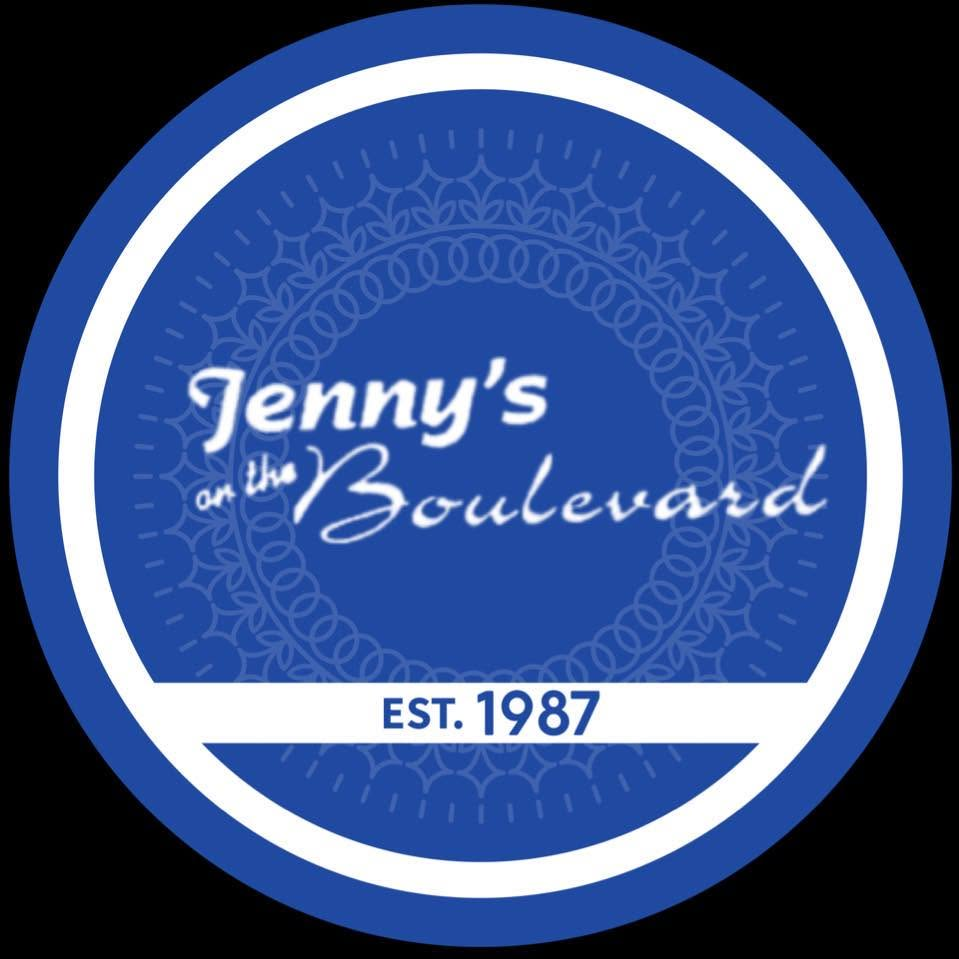

GOOD FOOD. GREAT COMPANY.
Customer cards, loyalty and conversations, together in one place.
A branded administration home with shortcuts to customers, loyalty cards, programs, messages and website app settings.
Customers and their cards use the native contact and loyalty records. The app sends unpaid native POS orders. Staff control tables, kitchen preparation, rewards and checkout through the existing Odoo applications.
Enable the app on the intended website and choose its visible loyalty programs. Customers sign in with their portal accounts; their card codes and balances come from the same native loyalty records.
App inbox messages and opted-in email queuing are included. Device push delivery requires separate configuration.